在黄金比例中，数学与艺术交汇。许多人说发现数学的过程很美，而黄金比例展示了美如何成其为数学。
黄金比例是数学中最为迷人的看点之一。许多鼎鼎大名的人物在年年岁岁中研究它的魅力，其中包括古希腊数学家欧几里得、古罗马工程师维特鲁威（他修建的大水渠迄今屹立）、意大利艺术家列奥纳多·达·芬奇，还有法国建筑师柯布西耶，他创新领导了建筑工程项目，设计了可供大规模人群居住的理想住所。（他的设计造价高昂，但是比20世纪广泛建造的那些廉价的替代品强很多。）
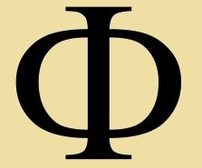
黄金比例有3种写法：一个希腊字母φ， 一个复杂的算式，或者一个无限不循环小数。
比例
那么，到底什么是黄金比例？首先，我们来理解术语“比”的含义。比是数学上连接两个数的办法，表示第一个数包含了第二个数的多少倍。例如，10与2的比是5∶1，这意味着10是2的5倍。比在刻画实物数量时很有用。比如说，如果一包糖有16块巧克力和12块柠檬糖，那么巧克力与柠檬糖的比就是16∶12，可以简化为4∶3。这个比告诉我们一包糖里每4块巧克力，都有3块柠檬糖与之相对应。这就给了我们两种糖的数量之比。一共有28块糖，巧克力与全部糖的数量之比是16∶28，或者说4∶7。这可以写成分数4/7，或者十进制小数0.57（也就是4除以7）。
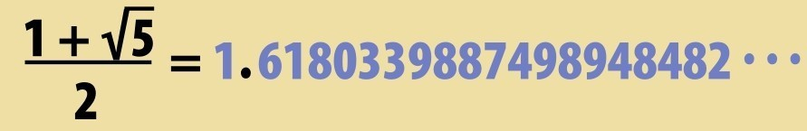
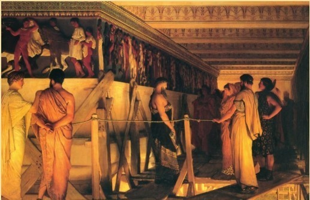
菲狄亚斯，黄金比例的命名者，正在雅典展示他的艺术品。
分割线段
比可以用来刻画一条线段分段的方式，这正是黄金比例的意义所在。把一条线段分成两段，这里不是对半分，就产生了两个比：第一个是长线段与短线段之间的比，第二个是整个线段与长线段之间的比。黄金比例是某种分割使得两个比一致的结果。换言之，“整个的比长的，等于长的比短的”。人们花了数百年才计算出，黄金比例在长线段与短线段之比为1.618的时候才能实现。
菲狄亚斯的Ф
黄金比例实际上是一串无限不循环小数，永远也写不完（见第40页）。数学家称它为Ф，这是菲狄亚斯的名字的首字母（希腊字母），他是古希腊雅典的帕特农神庙的建筑师。他在这一巨作中用到了黄金比例。
在帕特农神庙里，数学家找到许多黄金比例的例子，比如一面墙的高和宽的比。
极端与平均
跟用于建造帕特农神庙一样，黄金比例也用在许多艺术作品上——常常出于偶然，有时也在花朵之类自然的景物中出现。稍后我们可见更多，但我们首先看看数学之美吧。对黄金比例的值的研究始于欧几里得，他的工作是在菲狄亚斯建成帕特农神庙一个世纪之后进行的。欧几里得称黄金比例“又极端又平均”。他知道如何在一条线段上表示黄金比例，但是他无法计算各段线段的确切长度。
最初的计算
计算黄金比例涉及非常复杂的数学知识。我们设想线段长为1个单位长度，添上怎样一条短线段使得这两部分之比呈黄金比例呢？最初的完整解答在1597年由德国天文学家迈克尔·梅斯特林给出，他计算出短线段大约为0.618 034个单位长度。所以，把长短线段合起来，总长度是1.618 034…。这个数是无穷无尽的。
黄金矩形
长边与短边呈黄金比例的矩形就是黄金矩形。从矩形中划分出一个正方形（图中绿色区域）后，就在旁边造出了一个小矩形，它和母体一样也是黄金矩形。你可以继续划分，造出无穷无尽的黄金矩形。主对角线（图中白线）穿过所有矩形的一个角。
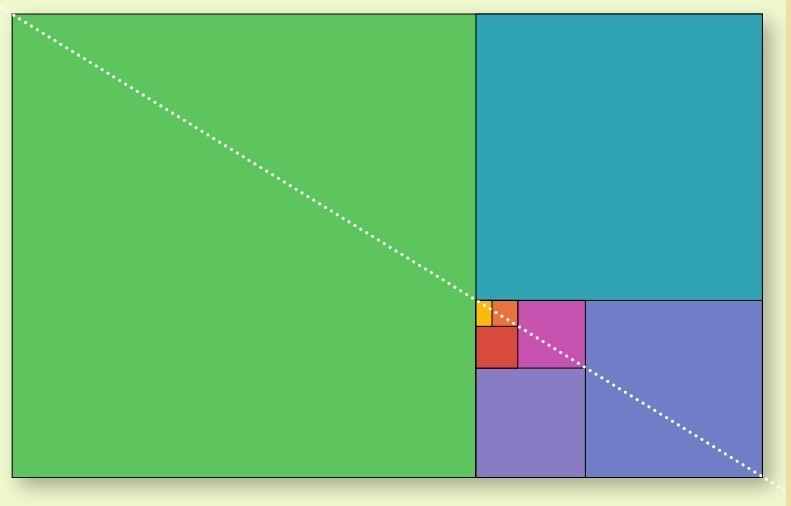
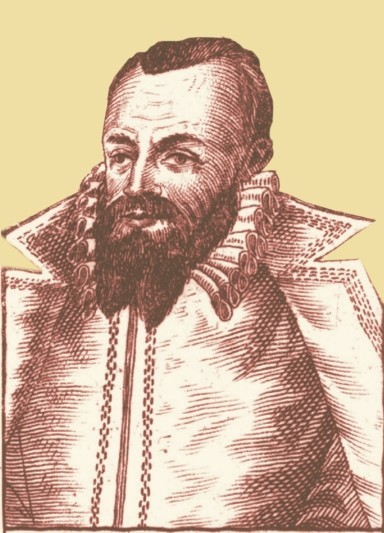
在欧几里得描绘黄金比例的1900年后，迈克尔·梅斯特林是第一个将黄金比例计算到小数点后几位的人。
简单的过程
要想做出黄金比例，需要画一条长度为1618单位的线段——剩下的数字就无所谓啦。长度的单位是什么都可以，英寸、毫米、手指宽度，全都无妨。把线段的前1000单位长度分出来，就形成了一个黄金比例。
简单矩形
黄金比例可以用于将物体不断划分，并非必须是线段。黄金矩形就是一个边长之比满足黄金比例的四边形，用我们简单的度量来说，长边是1000单位，短边是618单位。黄金矩形可以划分成越来越小的黄金矩形（见第46页方框），无穷无尽，只不过太小可能看不清。把一个黄金矩形水平放置，旁边另一个黄金矩形竖直放置，它们的4个角都在水平线上。从横向矩形的底角到顶角画一条对角线，它可以延伸到纵向矩形的顶角。你可以用信用卡自己尝试一下——是的，它们的形状正是黄金矩形（见下图）。在别的矩形上这可没法实现。[shu籍 分.享 V信jnztxy]
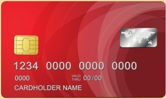
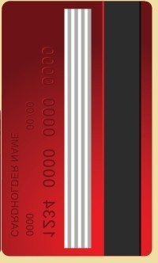
信用卡的形状是黄金矩形。检验一下，把两张信用卡这样放置，你可以用一柄直尺贯穿左边信用卡的左底角、右顶角和右边信用卡的右顶角。
恰如其分
黄金矩形出现在帕特农神庙的许多地方。例如，正面的廊柱就是黄金矩形的。但是并无证据表明菲狄亚斯在他的建筑里用了数学知识，或许只是巧合或是灵机一动。黄金矩形对于我们来说“恰如其分”，不太宽也不太窄，不太高也不太矮。
自然界中的黄金比例
黄金比例在自然界中也可以见到。这听起来挺奇怪，毕竟自然界中的直线少之又少。数学家在探索构造黄金矩形的方法的过程中，却发现他们能以黄金比例构造美妙的螺旋（见下图）。这个螺旋，或者诸如此类，在自然界中屡屡可见其身影，比如某些蜗牛或软体动物的壳，乃至某些星团。有些花朵的种子长成了黄金螺旋形。其中有这么个缘故：这样省地方，可以尽量多地排布下种子。种子长在一条直线上听起来简单，但花里就会留下许多空缺，大大浪费空间。螺旋形生长更有效率，又以黄金螺旋为最。
黄金螺旋
黄金矩形可以转化为黄金螺旋。第一步是把矩形切出一个正方形，从而把大矩形分成一串逐渐变小的矩形，每个正方形里可以恰好容纳1/4圆，将所有圆弧画好，就构成黄金螺旋。从最小的正方形出发，每个圆弧以Ф的比例增长，也就是说，每个圆弧都增大Ф倍。
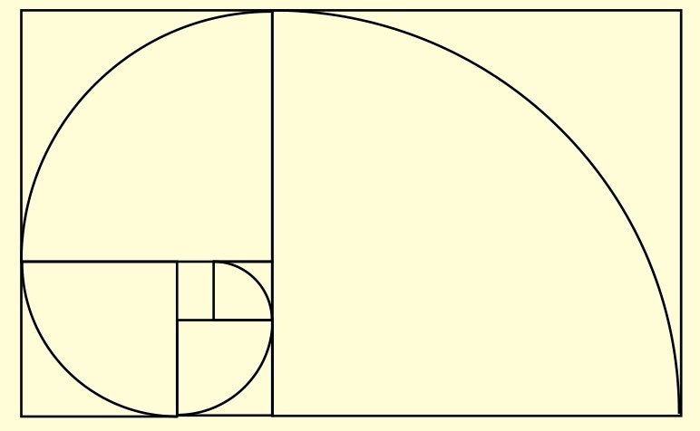
向日葵的种子从中心向外发散的各条曲线近似黄金螺旋。
黄金夹角
黄金比例在植物界还有另一种形式，即黄金夹角，它是指把一个圆分成两块，大块跟小块的比例等于整圆跟大块的比例。数学家用Ф表示黄金夹角，大约为137°（整个圆是360°）。植物的叶子和花瓣是按黄金夹角排布的，每片新叶子绕茎137°生长。这是植物保证各片叶子都充分占据空间的最佳方式。
艺术与设计中的黄金比例
具有数学思维的艺术家发现，他们可以用黄金比例来分解名画，将其拆分成一个套一个的黄金矩形。列奥纳多·达·芬奇的《蒙娜丽莎》经常被做这样的拆分。虽然黄金矩形对几乎所有名画都很适合，但是数学家不相信艺术作品真的是按黄金比例创作的。达·芬奇对黄金比例很感兴趣，他尝试用它去拟合人体，然而，他发现得拉伸身体的某部分（通常是躯干）或者缩短某部分（腿）才能办到（译者注：不同的人体形会有差别）。即使如此，黄金比例也用在了艺术和其他设计上，最著名的大概是位于纽约的联合国大厦。从正面看，它就是个黄金矩形。
金属比例一族
黄金比例有些“姿色稍逊的亲属”：白银比例和青铜比例。这里面的数学知识挺复杂，但是用矩形来看就很简单。从黄金矩形里去掉一个正方形，就得到一个小的黄金矩形。要得到白银矩形，得去掉两个正方形。青铜矩形就更瘦更长了，得去掉3个正方形。
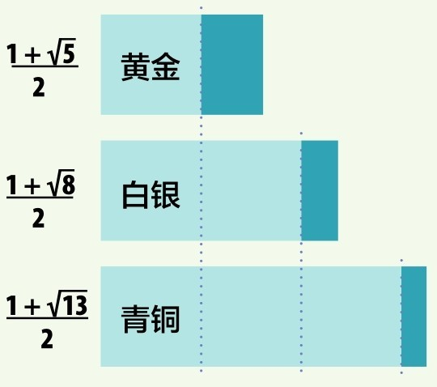
人形度量
联合国大厦的主体建筑是查尔斯·爱德华·靳奈瑞特·格力斯的作品，斯人以柯布西耶之名享誉。柯布西耶醉心于宜居的理想尺寸和形状的建筑空间。20世纪40年代，他发展出一种度量单位，称作模（Modulor），它是以人体大小为基础的。为稳妥计，柯布西耶设想出一个比普通人略大的形体，高6英尺（约1.83米）。他认为人所需的空间比这个大一点，于是让这个人形伸臂过顶，就得到它的高度7英尺5英寸（2.26米）。他认为建筑的所有组成部分——屋顶、门廊、台阶——都应当以此单位为基础。这是对于人来说的最佳空间——大多数人的生活和工作之室。当然，也不是说所有东西都得是1模那么高，据此，柯布西耶利用黄金比例设定了小一点的单位，用于设计座椅的高度、通道的宽度、台阶的大小等。大一点的单位用于设计从顶到底的整个建筑。
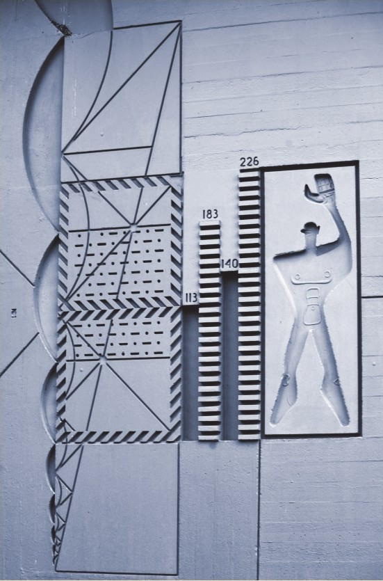
柯布西耶的黄金比例人形单位，展出于法国马赛的住宅之墙。
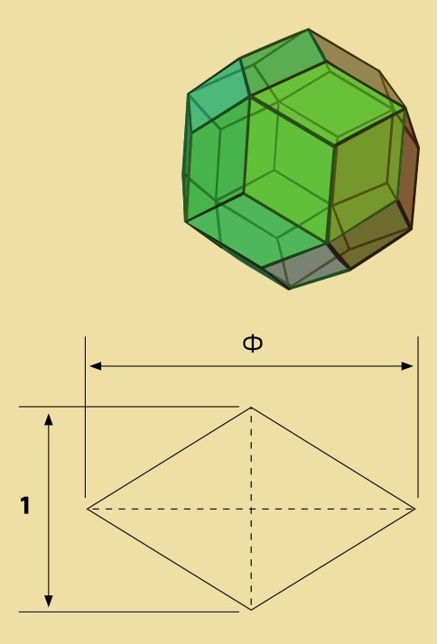
正三十面体是用黄金比例构成的最小的正多面体。它的30个面都是黄金菱形，长短对角线之比是Ф，形如右图。
黄金三角形
黄金比例也用于构建许多其他形状，比如黄金三角形。这是一个等腰三角形（有两条边长度相等的三角形），这个例子里两个腰是长边，长边与短边的边长之比是黄金比例。如同黄金矩形，黄金三角形也可以细分，细分成与之相似的三角形。下次请看星形——这是五角星在数学上的称谓，比如美国的星条旗上的星星，其尖角上都是黄金三角形。
大金字塔也是？
有人认为埃及开罗附近的大金字塔是按黄金比例设计的。这意味着欧几里得描绘黄金比例的大约2300年以前，数学家就已经懂得它了。金字塔的三角形立面是用黄金矩形沿对角线切成两半再拼起来形成的（黄金矩形切成两个直角三角形，再拼成一个大三角形）。另外，黄金比例也与底和高的比例有关。很有可能金字塔的建筑师用到了黄金比例，也有可能他对黄金比例独具慧眼。
黄金立体
正多面体（所有边、所有面都尺寸相同）没法用黄金三角形和黄金矩形拼出来。但是，它可以用黄金菱形拼出来。黄金菱形的对角线（见左上图）长度符合黄金比例。30个黄金菱形可以拼成正三十面体，通常用于30面的骰子。
参见：
▶斐波那契数列，第80页
▶数e，第138页
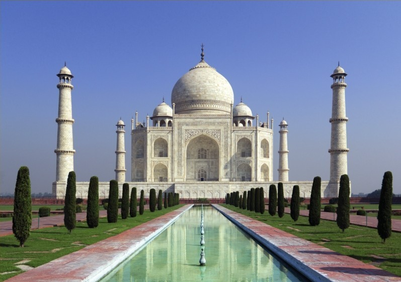
泰姬陵依黄金比例设计，在门楣、山墙、拱顶上可见黄金比例的应用。
位于纽约市的联合国大厦从正面看是个黄金矩形。